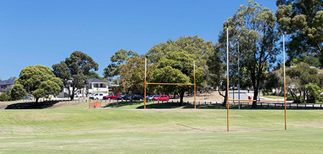
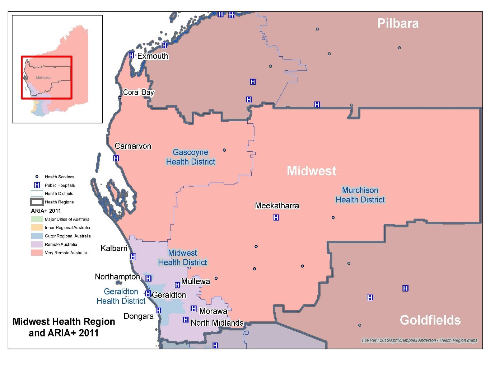
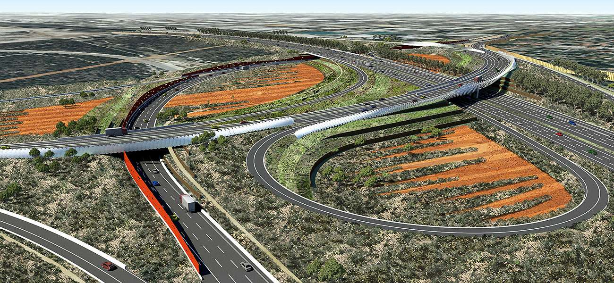

Case studies
2019 – Review of community engagement - City of Nedlands
Following similar work in 2016 for the City of Melville, in 2019 Helen Grzyb and Associates were appointed by the City of Nedlands to undertake an independent review of its public participation activities.
As well as reviewing the City’s community engagement, the review also assessed the City of Nedlands’ compliance with the Disability Services Regulations (2004) - public participation.
The review tools used were the International Association of Public Participation Quality Standard and the Disability Services Regulations (2004) public participation checklist.
The results of the review were positive, reinforcing the City’s engagement processes and its provisions for information, engagement and consideration in decision-making. Improvements were identified which could continue to reinforce and enhance the robust community engagement ethos and practices undertaken by the City including accessibility for people with a disability.
2018 – Home based aged care packages – A snapshot for Geraldton Regional Aboriginal Medical Service Inc
Key staff from Geraldton Regional Aboriginal Medical Service (GRAMS) and WA Country Health Service (WACHS) Mid West recognised that there were possible gaps in Aboriginal people having access to home based aged care packages in their region.
As a result, the WA Primary Health Alliance funded Helen Grzyb and Associates to undertake a snapshot picture about the reality for Aboriginal people in the three localities in the region; and about people’s access to home based aged care packages.
The project was hosted by GRAMS and supported by a project advisory committee comprising staff from GRAMS, WACHS (Mid West), Aboriginal Health Council of Western Australia (AHCWA), Bethanie, Carnarvon Medical Service Aboriginal Corporation (CMSAC).
There was significant buy in from a diverse range of stakeholders. People in government and in the community across the region wanted to work out how best to make a difference for those older Aboriginal people who are eligible but currently outside the home-based aged care system.
A key construct resulting from the project was the need for a service model which ensures clients are culturally safe – it was seen that this will shift existing resistance by people to being engaged in the aged care system.
As a result of the 2018 project, a trial was established for a centre-based service for people in the Geraldton local community. If successful, this trial could lead the way to significantly change access to home-based services, thus making a positive impact on the quality of life for people in the Mid West region.
2012 - Infrastructure– Community engagement review
Dr Helen Grzyb was part of the 2006 inaugural Main Roads WA (MRWA) Value Assurance Review team. This work tested the first Value Assurance Review (VAR) of MRWA stakeholder engagement. As a result of this work, Helen is an accredited Reviewer. Subsequently Helen went on to undertake a further five reviews for community engagement on MRWA projects:
- Albany Ring Road project
- City East Alliance project
- Gateway Vision project
- Mitchell Freeway Extension project
As a highly experienced Value Assurance Reviewer we utilised the MRWA framework and have adapted the review techniques to extend and improve the framework to include:
- Real time evaluation
- Independent review statement as part of the project business case
Helen Grzyb and Associates is currently a member of MRWA's contractor panel.
2012 – Town of Brookton WA and Baptistcare – Aged care contract review
Helen Grzyb and Associates were appointed to undertake a review of Baptistcare's contract with the Town of Brookton for management of the Kalkarni Aged Care facility.
The work involved reviewing documentation including contracts and financial reports, undertaking workshops and meeting with key stakeholders of the residential aged care service as well as the adjacent medical service.
As a result of this work the contract negotiations between the two parties progressed and an updated contract was agreed which recognised the current operating and policy environment for residential aged care in regional Western Australia; the quality requirements for residential aged care services; the differing needs well as the commonalities of interest between Baptistcare and the Town of Brookton.
Reflecting the changing policy and financial environment for residential aged care, in 2019, Baptistcare took over the service from the Town of Brookton.